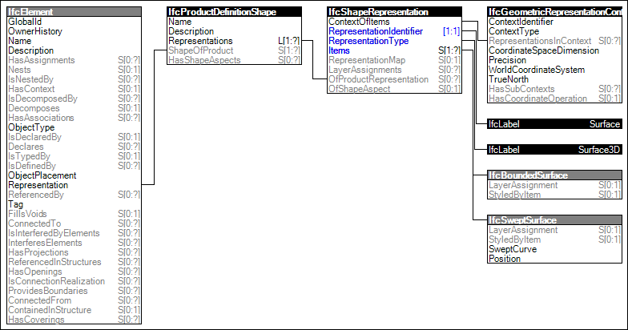

Link to this page
Link to this pageThe Surface 3D Geometry is the standard surfacic represenation for elements having a 'Surface' representation describing the inner or outer surface of the object, e.g. for defining thermal boundaries idealized at the middle plane of an element.
The following attribute values for the IfcShapeRepresentation holding this geometric representation shall be used:
Figure 72 illustrates an instance diagram.
 |
Figure 72 — Surface 3D Geometry |